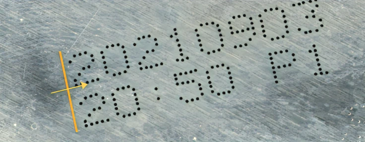
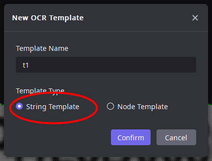
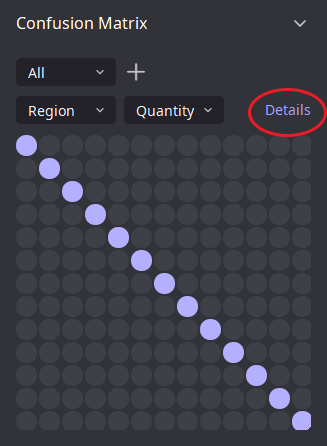
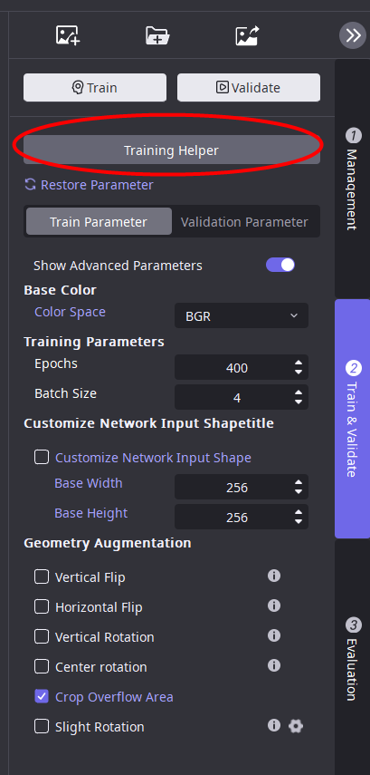

工具使用介紹
使用分割工具：
步驟1：設定視圖
根據實際需要設定視圖，點擊應用，跳轉到工具主頁面

步驟2：添加標籤類別
步驟3: 對缺陷區域進行標註
鍵盤S鍵可以保存影像並跳轉下一張
使用默認標籤： 勾選之後，標註會自動使用所選標籤，單類別缺陷標註時，建議勾選上
保存測試結果為標註：點擊後，測試結果轉化為標註結果
保存為OK圖並跳轉：保存當前圖片為OK圖並跳轉到下一張圖片
保存：保存當前缺陷標註，不跳轉到下一張圖片
保存並跳轉：保存當前缺陷標註並跳轉到下一張圖片
標籤清單：顯示當前所有標籤及其內容。勾選標籤前的複選框，圖片顯示相應的標籤標註
步驟4： 劃分訓練集
管道一：自動劃分
模型訓練助手共分為兩個功能板塊：數據劃分和訓練集推薦。
數據劃分 比例劃分：所有的已標註資料按照指定的比例劃分訓練集和測試集 數量劃分：所有的已標註資料按照指定的數量劃分訓練集和測試集 自動類別均衡：按照指定的比例作為訓練集總數，然後平均分給每個缺陷類別，最終按照缺陷類別分別劃分數量相等的影像作為訓練集，達到類別均衡。如果某類別數量上限不足要求，則按最大上限加入
管道二 用戶手動加入訓練集，支援多選

步驟5：調整訓練參數
基準通道： 原圖轉換為彩色圖或者灰度圖進行訓練，aqimg則每一張圖均單獨進行轉換。
基本訓練參數: 模型訓練經常需要調節的參數，會直接影響模型訓練的效果和速度。 訓練次數：調節範圍1-20000，每次反覆運算訓練集影像均參一次訓練。 訓練批次：調節範圍1-512，網路訓練每一次反覆運算時參與訓練的影像數量，合適的批次能充分利用硬體效能和提升收斂速度，常見值有2，4，8，16。 訓練模式：常規訓練模式下從頭開始訓練模型。增量訓練模式在選擇的模型上增量訓練。不需要從頭開始重新訓練整個模型
數據變換 難例取樣速率：調節範圍0-1，設定的值越大，對重點學習區域的關注度越高。 精度等級設定管道：自動適用：算法根據原圖尺寸、最小標註尺寸自我調整推薦精度等級。人工設定：精度等級以人工設定為准。查看：實際使用精度等級可以再“幫助-查看日誌”中查看。算法簡述：算法會將輸入網路時的影像短邊縮放為256精度等級，長邊等比例縮放，輸入網路。 精度等級：調節範圍1-20，將輸入網路時的圖像短邊縮放為256精度等級，長邊等比例縮放，較大的精度等級會使分割效果更精准，訓練推理時間更長，顯存消耗更大。 自定義輸入尺寸：自定義所有輸入圖片的寬高。算法會按照該參數將圖片縮放為設定的寬高
模型參數 模型架構：“小缺陷模型”對小缺陷的檢測效果較好，而“整合模型”的整合效果較好。當小缺陷模型的檢測效果不佳時，建議使用“整合模型”。“對比模型”僅用於混合圖工程，適用於比對分割 穩定變換：在啟用穩定變換的情況下，模型對目標輕微變換的適應性可以得到提高，但訓練和推理速度會慢20%
幾何增廣 建議僅勾選可能存在的幾何變化類型。通過對原有訓練集進行一定範圍內隨機程度的幾何變化，模擬實際場景可能會出現類似的圖片，提升模型相應的泛化能力。 垂直翻轉：以50%的概率垂直翻轉訓練圖像 水平翻轉：以50%的概率水平翻轉訓練圖像 垂直旋轉：將訓練影像隨機旋轉90度的倍數 中心對稱旋轉：將訓練影像隨機旋轉180度的倍數 裁剪溢出區域：裁剪由幾何變換引起的溢出區域 啟用輕微旋轉：啟用輕微旋轉 啟用垂直、水平移動：圖片隨機水平或垂直平移一定比例 啟用縮放：按照一定比例隨機縮放訓練數據 啟用扭曲：隨機扭曲訓練數據，用以模擬由鏡頭老化等因素造成的影像失真
圖像增廣 建議僅勾選可能存在的成像變化類型。通過對原有訓練集進行一定範圍內隨機程度的成像變化，模擬實際場景可能會出現類似的圖片，提升模型相應的泛化能力。 啟用光照變化：訓練集影像進行線性灰度變換，光照強度範圍0-1降低亮度，12增強亮度。光照強度範圍：調節範圍0-2 啟用對比度變化：保證影像整體亮度基本不變的情況下調整訓練集影像對比度，對比度變化範圍0-1降低對比度，1-2增強對比度。對比度變化範圍：調節範圍0-2 啟用雜訊：模擬相機或外部環境產生的隨機雜訊，雜訊強度0-2效果逐漸增強。雜訊強度：調節範圍0-2 啟用平滑/銳化：通過銳化圖像模擬鏡頭對焦更準確的場景。開啟之後，隨機對訓練圖像進行平滑或銳化，其中-1-0表示平滑，0-1表示銳化 啟用顏色濾鏡：模擬不同顏色燈光或加濾鏡產生的光照效果(只支援彩色影像)，顏色濾鏡強度控制允許的顏色濾鏡的最大強度，0-2效果逐漸增強。顏色濾鏡強度：調節範圍0-2 啟用光照漸變：模擬光照位置偏移產生的光強漸變場景，光照漸變強度0-2效果逐漸增強。光照漸變強度：調節範圍0-2
步驟6：調整推理參數
基本推理參數 推理批次大小：希望同時推理的圖片數量，通常情況下，預設值為1即可。注意，如果設定較大的批次，但未提供足夠的圖片，可能會減慢推理的速度 推理模式：推理執行模式，默認為快速啟動。有一下幾種選項：“快速啟動”啟動速度快但推理速度一般；“極速推理（高精度）”啟動速度稍慢但推理速度更快；“極速推理”推理速度最快但準確性可能略有下降。 過濾參數
像素閾值：調節範圍0-1，保留像素得分在閾值之上的像素，再將相鄰像素合併為區域。數值越高，標準越嚴格，可以降低漏檢；數值越低，標準越寬鬆，可以降低過檢，一般場景保持預設值即可 區域閾值：調節範圍0-1，在像素閾值篩選後，根據 區域得分過濾保留的區域，體現為一個區域會被直接過濾掉，而不是逐漸變小然後被過濾掉。需要保持像素閾值篩選檢出面積不變時使用 示意圖：

特徵閾值 啟用過濾參數：勾選後過濾參數生效。類別名稱：缺陷名稱。面積範圍：當勾選使用過濾後，只有區域面積處於面積範圍內的區域會被判定為缺陷。長邊範圍：當勾選使用過濾後，只有區域長邊處於長邊範圍內的區域會被判定為缺陷。短邊範圍：當勾選使用過濾後，只有區域短邊處於短邊範圍內的區域會被判定為缺陷。
步驟7：開啟訓練、推理

訓練過程曲線

分割誤差函數：數值越低學習效果越好。數值較大說明預測位置或分類不準確，如果訓練結束時，數值仍在下降過程，應當調高“訓練次數”再訓練；如果訓練結束時數值較高，且沒有下降趨勢，可以調整訓練集，標註，參數。 缺陷像素召回率：越接近1說明缺陷檢測越完整。 缺陷像素精確率：越接近1說明缺陷過檢越少。
更多
模型的詳細資訊，包含：訓練集、測試集分別的召回率、精確率、標註數、召回數、區域精確率、區域召回率

區域精確率：以缺陷區域為單位計算的精確率 區域召回率：以缺陷區域為單位計算的召回率
使用檢測工具：
步驟1：設定視圖
根據實際需要設定視圖，點擊應用，跳轉到工具主頁面
步驟2：添加標籤類別
步驟3: 對檢測區域進行標註
鍵盤S鍵可以保存影像並跳轉下一張
1.用默認標籤： 勾選之後，標註會自動使用所選標籤，單類別缺陷標註時，建議勾選上 2.保存測試結果為標註：點擊後，測試結果轉化為標註結果 3.保存為OK圖並跳轉：保存當前圖片為OK圖並跳轉到下一張圖片 4.保存：保存當前缺陷標註，不跳轉到下一張圖片 5.保存並跳轉：保存當前缺陷標註並跳轉到下一張圖片 6.標籤清單：顯示當前所有標籤及其內容。勾選標籤前的複選框，圖片顯示相應的標籤標註

步驟4： 劃分訓練集
管道一：自動劃分

模型訓練助手共分為兩個功能板塊：數據劃分和訓練集推薦。

數據劃分 比例劃分：所有的已標註資料按照指定的比例劃分訓練集和測試集 數量劃分：所有的已標註資料按照指定的數量劃分訓練集和測試集 自動類別均衡：按照指定的比例作為訓練集總數，然後平均分給每個缺陷類別，最終按照缺陷類別分別劃分數量相等的影像作為訓練集，達到類別均衡。如果某類別數量上限不足要求，則按最大上限加入
管道二 用戶手動加入訓練集，支援多選

步驟5：調整訓練參數
基準通道 原圖轉換為彩色圖或者灰度圖進行訓練，aqimg則每一張圖均單獨進行轉換。
訓練參數 模型訓練經常需要調節的參數，會直接影響模型訓練的效果和速度。 訓練次數：調節範圍1-20000，每次反覆運算訓練集影像均參一次訓練。 訓練批次：調節範圍1-512，網路訓練每一次反覆運算時參與訓練的影像數量，合適的批次能充分利用硬體效能和提升收斂速度，常見值有2，4，8，16。
模型架構：簡單網絡，中等網絡，複雜網絡。在效率指標上依次遞減，而在效果指標上則依次遞增。
複雜網絡適用於絕大多數場景，並提供了最高的檢測指標，儘管其效率相對較低。
中等模型：適用於更快的處理速度而對檢測效果的精確度要求不是極高的場景。
簡單模型：適用於簡單的檢測任務，如僅提取圖像中大致區域的 ROI。
最大邊長：調節範圍64-99999，將輸入圖像長邊縮放為最大邊長，短邊等比例縮放，若演算法計算出需要的最大邊長小於該參數，則自動設置最大邊長。
幾何增廣 建議僅勾選可能存在的幾何變化類型。通過對原有訓練集進行一定範圍內隨機程度的幾何變化，模擬實際場景可能會出現類似的圖片，提升模型相應的泛化能力。 垂直翻轉：以50%的概率垂直翻轉訓練圖像 水平翻轉：以50%的概率水平翻轉訓練圖像 垂直旋轉：將訓練影像隨機旋轉90度的倍數 中心對稱旋轉：將訓練影像隨機旋轉180度的倍數 裁剪溢出區域：裁剪由幾何變換引起的溢出區域 啟用輕微旋轉：啟用輕微旋轉 啟用垂直、水平移動：圖片隨機水平或垂直平移一定比例 啟用縮放：按照一定比例隨機縮放訓練數據 啟用扭曲：隨機扭曲訓練數據，用以模擬由鏡頭老化等因素造成的影像失真
圖像增廣 建議僅勾選可能存在的成像變化類型。通過對原有訓練集進行一定範圍內隨機程度的成像變化，模擬實際場景可能會出現類似的圖片，提升模型相應的泛化能力。
啟用光照變化：訓練集影像進行線性灰度變換，光照強度範圍0-1降低亮度，1-2增強亮度。光照強度範圍：調節範圍0-2 啟用對比度變化：保證影像整體亮度基本不變的情況下調整訓練集影像對比度，對比度變化範圍0-1降低對比度，1-2增強對比度。對比度變化範圍：調節範圍0-2 啟用雜訊：模擬相機或外部環境產生的隨機雜訊，雜訊強度0-2效果逐漸增強。雜訊強度：調節範圍0-2 啟用平滑/銳化：通過銳化圖像模擬鏡頭對焦更準確的場景。開啟之後，隨機對訓練圖像進行平滑或銳化，其中-1-0表示平滑，0-1表示銳化 啟用顏色濾鏡：模擬不同顏色燈光或加濾鏡產生的光照效果(只支援彩色影像)，顏色濾鏡強度控制允許的顏色濾鏡的最大強度，0-2效果逐漸增強。顏色濾鏡強度：調節範圍0-2 啟用光照漸變：模擬光照位置偏移產生的光強漸變場景，光照漸變強度0-2效果逐漸增強。光照漸變強度：調節範圍0-2
數據變換 自定義輸入尺寸：自定義所有輸入圖片的寬高。算法會按照該參數將圖片縮放為設定的寬高 步驟5：調整推理參數 推理網路參數 推理批次大小：希望同時推理的圖片數量，通常情況下，預設值為1即可。注意，如果設定較大的批次，但未提供足夠的圖片，可能會減慢推理的速度 推理模式：推理執行模式，默認為快速啟動。有一下幾種選項：“快速啟動”啟動速度快但推理速度一般；“極速推理（高精度）”啟動速度稍慢但推理速度更快；“極速推理”推理速度最快但準確性可能略有下降。 推理參數 置信度閾值：置信度大於此閾值的檢出結果將被確定為目標 最小目標尺寸：只保留寬度和高度大於最小尺寸的結果 最大目標數：只保留置信得分最高的N個目標 得分閾值 可以對指定的缺陷類型設置得分閾值，大於設定數值的檢出區域會被判為缺陷 特徵閾值 啟用過濾參數：勾選後過濾參數生效。類別名稱：缺陷名稱。面積範圍：當勾選使用過濾後，只有區域面積處於面積範圍內的區域會被判定為缺陷。長邊範圍：當勾選使用過濾後，只有區域長邊處於長邊範圍內的區域會被判定為缺陷。短邊範圍：當勾選使用過濾後，只有區域短邊處於短邊範圍內的區域會被判定為缺陷。
步驟6：開啟訓練、推理
訓練過程曲線

定位框誤差函數：數值較大說明定位誤差大，數值越低學習效果越好。如果訓練結束時，數值仍在下降過程，應當調高“訓練次數”再訓練；如果尋來你結束時數值較高，且沒有下降趨勢，可以調整訓練集，標註，參數。
更多
模型的詳細資訊，包含：訓練集、測試集分別的召回率、精確率、標註數、召回數、區域精確率、區域召回率
區域精確率：以缺陷區域為單位計算的精確率 區域召回率：以缺陷區域為單位計算的召回率
使用定位工具：
步驟1：選擇算法類型
AI 定位：用於複雜背景下目標定位需求。
幾何匹配：若檢測目標是輪廓清晰且不易變形的剛體，建議使用幾何匹配。建議優先使用。
步驟2：AI 定位
步驟 2.1：AI 定位 - 設置視圖 根據實際需要設置視圖，點擊應用，跳轉到工具主頁面
步驟 2.2：AI 定位 - 添加標籤類別
步驟 2.3：AI 定位 - 對檢測區域進行標註
鍵盤S鍵可以保存影像並跳轉下一張
使用默認標籤： 勾選之後，標註會自動使用所選標籤，單類別缺陷標註時，建議勾選上
保存測試結果為標註：點擊後，測試結果轉化為標註結果
保存為OK圖並跳轉：保存當前圖片為OK圖並跳轉到下一張圖片
保存：保存當前缺陷標註，不跳轉到下一張圖片
保存並跳轉：保存當前缺陷標註並跳轉到下一張圖片
標籤清單：顯示當前所有標籤及其內容。勾選標籤前的複選框，圖片顯示相應的標籤標註
單點定位
（1）首先畫一條與目標的高或者寬平行的線段

（2）然後滑鼠左鍵按住繪製

設定模板
節點模板 適應管道可以選擇按比例或者按像素
用法：由圖定義一組關鍵點的空間關係，將同一工件上所檢測到的關鍵點整合在一起，作為完整的零件識別結果輸出，並給出大致的 2D 姿態。
使用場景：定位類，給出各個檢測目標物體的大致姿態。
參數 模板名稱：當前模板名稱，支援修改。 模板角度：當前模板的角度。 節點編號：當前選中節點的編號。支援添加刪除節點。 節點類型：節點所能匹配關鍵點的類別。類別之間以定義類別的字串區分。只有類別一致的關鍵點和模板節點可以相匹配。 節點中心：節點的中心位置。問題求解的目標即是找到一組變換，使變換後的各個節點座標與關鍵點座標基本吻合。 縮放：按縮放比例篩選。如果一種匹配模式所對應的相似變換的縮放比例不在此範圍內，該匹配將被過濾掉。 旋轉：按旋轉角度篩選，如果一種匹配模式所對應的相似變換的旋轉角度不在此範圍內，該匹配將被過濾掉，逆時針旋轉為正。 特徵漏檢個數：如果對於模板中有若干個節點，找不到能夠相匹配的關鍵點，且如果這些無法匹配的節點的數量不超過該值，則也將相應的匹配模式保留到輸出。由於新增了搜索空間大小，耗時會不同程度地新增。支援設定的最大值為3。為了避免同一個結果被重複輸出等問題，當此參數設置為大於0時，如果一個節點可匹配到漏檢個數較少的匹配模式中，則它不會再被匹配到漏檢個數更多的匹配模式中。 模板保留數量：根據匹配距離由小到大排序，選取最優的若干個結果，其他的結果將被過濾掉。默認為全部保留。 節點最大允許偏差：匹配模式中每個模板節點與字元的位置都難免存在大於0的距離，如果某個節點到字元的距離超過該參數的值，該匹配將被過濾掉。
使用方法： 方法一：從已有標註創建：依次選中標註框，右鍵菜單中選擇“創建匹配模板” 方法二：先進入模板匹配就視窗，然後手動添加節點並創建模板
步驟2.4： AI 定位 - 劃分訓練集
管道一：自動劃分
數據劃分
數據劃分 比例劃分：所有的已標註資料按照指定的比例劃分訓練集和測試集 數量劃分：所有的已標註資料按照指定的數量劃分訓練集和測試集 自動類別均衡：按照指定的比例作為訓練集總數，然後平均分給每個缺陷類別，最終按照缺陷類別分別劃分數量相等的影像作為訓練集，達到類別均衡。如果某類別數量上限不足要求，則按最大上限加入
管道二:手動劃分 用戶手動加入訓練集，支援多選
步驟2.5：AI 定位 - 調整訓練參數
基準通道 原圖轉換為彩色圖或者灰度圖進行訓練，aqimg則每一張圖均單獨進行轉換。
訓練參數 模型訓練經常需要調節的參數，會直接影響模型訓練的效果和速度。 訓練次數：調節範圍1~20000，每次反覆運算訓練集影像均參一次訓練。 訓練批次：調節範圍1~512，網路訓練每一次反覆運算時參與訓練的影像數量，合適的批次能充分利用硬體效能和提升收斂速度，常見值有2，4，8，16。
幾何增廣 建議僅勾選可能存在的幾何變化類型。通過對原有訓練集進行一定範圍內隨機程度的幾何變化，模擬實際場景可能會出現類似的圖片，提升模型相應的泛化能力。 垂直翻轉：以50%的概率垂直翻轉訓練圖像 水平翻轉：以50%的概率水平翻轉訓練圖像 垂直旋轉：將訓練影像隨機旋轉90度的倍數 中心對稱旋轉：將訓練影像隨機旋轉180度的倍數 裁剪溢出區域：裁剪由幾何變換引起的溢出區域 啟用輕微旋轉：啟用輕微旋轉 啟用垂直、水平移動：圖片隨機水平或垂直平移一定比例 啟用縮放：按照一定比例隨機縮放訓練數據 啟用扭曲：隨機扭曲訓練數據，用以模擬由鏡頭老化等因素造成的影像失真
圖像增廣 建議僅勾選可能存在的成像變化類型。通過對原有訓練集進行一定範圍內隨機程度的成像變化，模擬實際場景可能會出現類似的圖片，提升模型相應的泛化能力。
啟用光照變化：訓練集影像進行線性灰度變換，光照強度範圍0~1降低亮度，1~2增強亮度。光照強度範圍：調節範圍0~2 啟用對比度變化：保證影像整體亮度基本不變的情況下調整訓練集影像對比度，對比度變化範圍0~1降低對比度，1~2增強對比度。對比度變化範圍：調節範圍0~2 啟用噪聲：模擬相機或外部環境產生的隨機雜訊，雜訊強度0~2效果逐漸增強。雜訊強度：調節範圍0~2 啟用平滑/銳化：通過銳化圖像模擬鏡頭對焦更準確的場景。開啟之後，隨機對訓練圖像進行平滑或銳化，其中-1~0表示平滑，0~1表示銳化 啟用顏色濾鏡：模擬不同顏色燈光或加濾鏡產生的光照效果(只支援彩色影像)，顏色濾鏡強度控制允許的顏色濾鏡的最大強度，0~2效果逐漸增強。顏色濾鏡強度：調節範圍0~2 啟用光照漸變：模擬光照位置偏移產生的光強漸變場景，光照漸變強度0~2效果逐漸增強。光照漸變強度：調節範圍0~2
數據變換 根據圖片長寬和模型速度要求決定。在輸入模型前，將影像統一轉換為設定的固定大小。
最大邊長：將輸入圖像的長邊和短邊縮放到最大邊長，如果演算法計算出所需的最大邊長小於這個參數，最大邊長將被自動設置 模型參數 根據對檢測目標不同，速度需求不同選擇合適的基礎模型。 定位類型：高精度定位和快速定位均用於目標精准定位，高精度定位適合定位精度高達一個像素的場景，快速定位的定位精度相比高精度定位較低，但同時訓練推理速度更高，顯存占比也更低，適用於大部分場景。 預測角度：開啟此選項後網路可以學習目標的角度，且標註時可以旋轉；不開啟角度始終為0° 預測半徑：開啟此選項後網路可以學習目標的寬高，且標註時可以大小不一；不開啟時寬高始終統一
步驟2.6：AI 定位 - 調整推理參數
推理網路參數 推理批次大小：希望同時推理的圖片數量，通常情況下，預設值為1即可。注意，如果設定較大的批次，但未提供足夠的圖片，可能會減慢推理的速度 推理模式：推理執行模式，默認為快速啟動。有一下幾種選項：“快速啟動”啟動速度快但推理速度一般；“極速推理（高精度）”啟動速度稍慢但推理速度更快；“極速推理”推理速度最快但準確性可能略有下降。 過濾參數 置信度閾值：置信度大於此閾值的檢出結果將被確定為目標 搜索密度：在目標尺寸*密度的·半徑內只保留一個結果
步驟2.7：AI 定位 - 開啟訓練、推理
訓練過程曲線
角度誤差函數：數值越低學習效果越好。數值表示角度預測與角度標註的差值 定位誤差函數：數值越低學習效果越好。數值表示座標預測與座標標註的差值 如果訓練結束時，數值仍在下降過程，應當調高“訓練次數”再訓練；如果訓練結束時數值較高，且沒有下降趨勢，可以調整訓練集，標註，參數。
更多
模型的詳細資訊，包含：訓練集、測試集分別的召回率、精確率、標註數、召回數、區域精確率、區域召回率
區域精確率：以缺陷區域為單位計算的精確率 區域召回率：以缺陷區域為單位計算的召回率
步驟 3： 幾何匹配
步驟 3.1： 幾何匹配 - 設置視圖
根據實際檢測位置和範圍，設定視圖位置和尺寸。點擊應用，跳轉到工具主頁面。
步驟 3.2：幾何匹配 - 添加標籤類別
輸入要檢測標籤名稱，按回車鍵完成輸入。
步驟 3.3：幾何匹配 - 對檢測區域進行標註
標註方式 1：精確點定位
調整合適的矩形框角度和尺寸，按鍵盤 S 鍵可以保存圖像。 幾何匹配模塊標註一張圖像即可。
標註方式 2：單點定位
（1）首先畫一條與目標的高或者寬平行的線段
（2）然後移動滑鼠左鍵拖拽，完成檢測區域繪製
步骤 3.4：幾何匹配 - 劃分訓練集
只需要選擇一個圖像加入訓練集
步骤 3.5：幾何匹配 - 調整訓練參數
圖像頁面：工程類型為混合工程時，選擇一張子圖進行訓練，參數為 0 表示用第一張訓練。其他工程類型不用修改。
顆粒度：如果提取的邊緣點中噪聲占比較多，適當調大顆粒度，有助於訓練速度提升；如果提取的邊緣點過於稀疏，可以適當減小顆粒度，訓練速度將會降低。現場訓練效果不佳時再手動設置，建議調整範圍 1~5。
噪聲閾值：無關特徵的點過多，則適當增大噪聲閾值；反之，則適當減小噪聲閾值。現場效果不好再調整，建議調整範圍 10~60。
梯度幅值相對閾值：值越大，提取的邊緣信息越少，可能會忽略掉細節。值越小，提取的邊緣信息越多，可能會引入噪聲。建議採用默認值，現場產品邊緣模糊情況下，適當減小參數有助於提升識別效果。
下採樣倍率：圖像下採樣的下採樣倍率越大，訓練和推理的速度越快，但檢測的精度越差；現場一般使用默認值 1，不進行下採樣。
步骤 3.6：幾何匹配 - 調整推理參數
得分閾值：匹配目標的相似度閾值，低於閾值的結果會被過濾掉。建議使用默認值。
每個視圖最大匹配數量：默認值為 1，每個視圖中的匹配目標數量不會超過 1。設置為 0 時，表示不限制視圖中檢測數量。
角度旋轉範圍：用於匹配不同角度的目標，設置的角度旋轉範圍越大，匹配時間越長。
縮放比例範圍：用於匹配不同尺度的目標，設置的縮放比例範圍越大，匹配時間越長。
搜索模式：快速模式，運行速度最快，精度一般；高精模式，速度一般，高精度搜索；魯棒高精模式，速度最慢，具魯棒性的高精度搜索。現場建議首先使用快速模式。
忽略極性：選擇勾選後，當模板與目標明暗不一致時，也進行識別。
超時：當演算法匹配時間超過 5000 毫秒時，演算法終止匹配，僅輸出匹配成功的目標。建議根據實際專案中的強制 ct 時間來設定。
步骤 3.7：幾何匹配 - 調整推理 參數
使用裝配檢查工具：
步驟1：設定視圖
根據實際需要設定視圖，點擊應用，跳轉到工具主頁面
步驟2：添加標籤類別
步驟3: 對檢測區域進行標註
鍵盤S鍵可以保存影像並跳轉下一張
1.用默認標籤： 勾選之後，標註會自動使用所選標籤，單類別缺陷標註時，建議勾選上 2.保存測試結果為標註：點擊後，測試結果轉化為標註結果 3.保存為OK圖並跳轉：保存當前圖片為OK圖並跳轉到下一張圖片 4.保存：保存當前缺陷標註，不跳轉到下一張圖片 5.保存並跳轉：保存當前缺陷標註並跳轉到下一張圖片 6.標籤清單：顯示當前所有標籤及其內容。勾選標籤前的複選框，圖片顯示相應的標籤標註
單點定位
（1）首先畫一條與目標的高或者寬平行的線段

（2）然後滑鼠左鍵按住繪製

設定模板
佈局模板 佈局模板工作流程： 佈局模板需定義若干個矩形區域，並預設每個區域內各類別關鍵點的數量。模板將檢查各個區域的關鍵像素量是否符合預設的值，根據實際檢出關鍵像素量與預設數量是否一致，來判定能否匹配，匹配成功返回True，匹配不上（實際檢出數量不等於設定的目標數量時）返回False。 允許進行同一個區域內的多種類別關鍵點檢查。

參數 模板名稱：當前模板名稱，支援修改。 區域：支援添加和刪除區域。 區域中心：區域的中心位置。 區域大小：區域的大小。 目標類別：當前區域的目標類別，一個區域可多類別。 目標數量：當前選中區域內，匹配的總目標數量（如果區域內的目標數量等於該數量，則該區功能變數結果為True，否則為False） 佈局區域的添加刪除：點擊添加按鈕，添加新的佈局區域；選擇已有區域複選框點擊刪除按鈕，刪除當前選中區域。 為區域添加目標類別：點擊已有區域，在目標類別中選擇合適類別的複選框為該區域添加目標類別。 創建佈局模板
設定完成之後，需要點擊“開始匹配”

步驟4： 劃分訓練集
管道一：自動劃分
模型訓練助手共分為兩個功能板塊：數據劃分和訓練集推薦。

數據劃分 比例劃分：所有的已標註資料按照指定的比例劃分訓練集和測試集 數量劃分：所有的已標註資料按照指定的數量劃分訓練集和測試集 自動類別均衡：按照指定的比例作為訓練集總數，然後平均分給每個缺陷類別，最終按照缺陷類別分別劃分數量相等的影像作為訓練集，達到類別均衡。如果某類別數量上限不足要求，則按最大上限加入
管道二 用戶手動加入訓練集，支援多選
步驟5：調整訓練參數
基準通道 原圖轉換為彩色圖或者灰度圖進行訓練，aqimg則每一張圖均單獨進行轉換。
訓練參數 模型訓練經常需要調節的參數，會直接影響模型訓練的效果和速度。 訓練次數：調節範圍1~20000，每次反覆運算訓練集影像均參一次訓練。 訓練批次：調節範圍1~512，網路訓練每一次反覆運算時參與訓練的影像數量，合適的批次能充分利用硬體效能和提升收斂速度，常見值有2，4，8，16。
幾何增廣 建議僅勾選可能存在的幾何變化類型。通過對原有訓練集進行一定範圍內隨機程度的幾何變化，模擬實際場景可能會出現類似的圖片，提升模型相應的泛化能力。 垂直翻轉：以50%的概率垂直翻轉訓練圖像 水平翻轉：以50%的概率水平翻轉訓練圖像 垂直旋轉：將訓練影像隨機旋轉90度的倍數 中心對稱旋轉：將訓練影像隨機旋轉180度的倍數 裁剪溢出區域：裁剪由幾何變換引起的溢出區域 啟用輕微旋轉：啟用輕微旋轉 啟用垂直、水平移動：圖片隨機水平或垂直平移一定比例 啟用縮放：按照一定比例隨機縮放訓練數據 啟用扭曲：隨機扭曲訓練數據，用以模擬由鏡頭老化等因素造成的影像失真
圖像增廣 建議僅勾選可能存在的成像變化類型。通過對原有訓練集進行一定範圍內隨機程度的成像變化，模擬實際場景可能會出現類似的圖片，提升模型相應的泛化能力。
啟用光照變化：訓練集影像進行線性灰度變換，光照強度範圍0~1降低亮度，1~2增強亮度。光照強度範圍：調節範圍0~2 啟用對比度變化：保證影像整體亮度基本不變的情況下調整訓練集影像對比度，對比度變化範圍0~1降低對比度，1~2增強對比度。對比度變化範圍：調節範圍0~2 啟用雜訊：模擬相機或外部環境產生的隨機雜訊，雜訊強度0~2效果逐漸增強。雜訊強度：調節範圍0~2 啟用平滑/銳化：通過銳化圖像模擬鏡頭對焦更準確的場景。開啟之後，隨機對訓練圖像進行平滑或銳化，其中-1~0表示平滑，0~1表示銳化 啟用顏色濾鏡：模擬不同顏色燈光或加濾鏡產生的光照效果(只支援彩色影像)，顏色濾鏡強度控制允許的顏色濾鏡的最大強度，0~2效果逐漸增強。顏色濾鏡強度：調節範圍0~2 啟用光照漸變：模擬光照位置偏移產生的光強漸變場景，光照漸變強度0~2效果逐漸增強。光照漸變強度：調節範圍0~2
數據變換 根據圖片長寬和模型速度要求決定。在輸入模型前，將影像統一轉換為設定的固定大小。 最大邊長設置方式： 自動適用：當使用定位模型時最大邊長值設置為原圖最大邊尺寸，當使用裝配檢查模式時算法根據原圖尺寸和目標尺寸自我調整推薦最大邊長的值。 人工設定：最大邊長以人工設定為准。 查看：實際使用最大邊長可以在“幫助-查看日誌”中查看。 算法簡述：演算法會將輸入網路時的圖像長邊縮放為最大邊長，短邊等比例縮放，輸入網路。 最大邊長：調節範圍64~30000，開啟手動設置最大邊長時生效，將輸入圖像長邊縮放為最大邊長，短邊等比例縮放。較大的最大邊長會使定位效果更精准，訓練推理時間更長，顯存消耗更大。
模型參數 預測角度：開啟此選項後網路可以學習目標的角度，且標註時可以旋轉；不開啟角度始終為0° 預測半徑：開啟此選項後網路可以學習目標的寬高，且標註時可以大小不一；不開啟時寬高始終統一
步驟6：調整推理參數
推理網路參數 推理批次大小：希望同時推理的圖片數量，通常情況下，預設值為1即可。注意，如果設定較大的批次，但未提供足夠的圖片，可能會減慢推理的速度 推理模式：推理執行模式，默認為快速啟動。有一下幾種選項：“快速啟動”啟動速度快但推理速度一般；“極速推理（高精度）”啟動速度稍慢但推理速度更快；“極速推理”推理速度最快但準確性可能略有下降。
過濾參數 置信度閾值：置信度大於此閾值的檢出結果將被確定為目標 搜索密度：在目標尺寸*密度的·半徑內只保留一個結果
步驟7：開啟訓練、推理

訓練過程曲線
角度誤差函數：數值越低學習效果越好。數值表示角度預測與角度標註的差值 定位誤差函數：數值越低學習效果越好。數值表示座標預測與座標標註的差值 如果訓練結束時，數值仍在下降過程，應當調高“訓練次數”再訓練；如果訓練結束時數值較高，且沒有下降趨勢，可以調整訓練集，標註，參數。
更多
模型的詳細資訊，包含：訓練集、測試集分別的召回率、精確率、標註數、召回數、區域精確率、區域召回率
區域精確率：以缺陷區域為單位計算的精確率 區域召回率：以缺陷區域為單位計算的召回率
使用字元識別工具：
步驟1：設定視圖
根據實際需要設定視圖，點擊應用，跳轉到工具主頁面

步驟2: 調整字元標準框
首先把此框調整到與單個字元外接矩形大小

步驟3: 直接推理
本工具內置預製模型，可解決大部分場景的字元識別問題

如果預訓練無法識別，則可以使用手動標註、再訓練的方式來獲得理想結果
手動標註【推薦啟用待定標籤，可以快速標註一串字元】

標註完成之後，進入編輯模式，依次選中字元，輸入字串名稱即可
鍵盤S鍵可以保存影像並跳轉下一張
1.用默認標籤： 勾選之後，標註會自動使用所選標籤，單類別缺陷標註時，建議勾選上 2.保存測試結果為標註：點擊後，測試結果轉化為標註結果 3.保存為OK圖並跳轉：保存當前圖片為OK圖並跳轉到下一張圖片 4.保存：保存當前缺陷標註，不跳轉到下一張圖片 5.保存並跳轉：保存當前缺陷標註並跳轉到下一張圖片 6.標籤清單：顯示當前所有標籤及其內容。勾選標籤前的複選框，圖片顯示相應的標籤標註
通用模型
適用場景：OCR大部分字元固定，通用模型可以無需標註訓練解決部分場景的字元識別，節省標註訓練時間。也可根據OCR通用模型測試結果轉換為標註，以便於下一步標註調整。使用限制條件：輸入圖片大小一致。主要用於輔助標註。 *通用模型默認使用 重置模型：點擊重置模型可以將當前模型覆蓋為通用模型

設定模板
OCR模組提供了兩種模板工具，用於將字元整合成串 字串模板 應用場景：待檢字串的字元按直線排列，字 符數量多 功能介紹：將按直線排列的識別結果整合成字 符串，運行速度快。並且可以設定固定的篩選規則來得到最終的結果 字元節點模板 應用場景：字串內部字元相對位置固定。 不能適應變長字串，以及不等寬字體超長字串 功能介紹：用圖定義各字元的空間排布模式， 匹配任意形狀字串。並且可以設定固定的篩選規則來得到最終的結果 使用教程 1.字串模板 （1）點擊模板管理

（2）彈出模板管理介面

（3）選擇模板類型

（4）配置模板參數
（5）模板校正功能介紹 字元校正模板： 使用場景：一個字串中出現部分完全不變的內容，部分明確為數字或大小寫字元，設定規則能夠降低字串的錯檢，將不符合該規則的字元轉化為符合設定規則的字元進行輸出 使用方法： 勾選“字元校正模板”，並按照指南內容，輸入模板規則

字串篩選模板：（原規則運算式） 使用場景：執行模板匹配時，不符合規則的字串想要過濾掉，不進行匹配 使用方法： 勾選“字串篩選模板”，並按照指南內容，輸入模板規則

（6）點擊開始匹配即可執行模板匹配
2.字元節點模板 （1）進入編輯模式，依次選中想要匹配成一串的字元，右鍵，選擇創建模板
（2）進入字元節點匹配詳情頁，設置所需參數

（3）模板校正功能介紹 字元校正模板： 使用場景：一個字串中出現部分完全不變的內容，部分明確為數字或大小寫字元，設定規則能夠降低字串的錯檢，將不符合該規則的字元轉化為符合設定規則的字元進行輸出 使用方法： 勾選“字元校正模板”，並按照指南內容，輸入模板規則

（4）點擊開始匹配即可執行模板匹配

步驟4： 劃分訓練集
管道一：自動劃分
模型訓練助手共分為兩個功能板塊：數據劃分和訓練集推薦。

數據劃分 比例劃分：所有的已標註資料按照指定的比例劃分訓練集和測試集 數量劃分：所有的已標註資料按照指定的數量劃分訓練集和測試集 自動類別均衡：按照指定的比例作為訓練集總數，然後平均分給每個缺陷類別，最終按照缺陷類別分別劃分數量相等的影像作為訓練集，達到類別均衡。如果某類別數量上限不足要求，則按最大上限加入
管道二 用戶手動加入訓練集，支援多選
步驟5：調整訓練參數
基準通道 原圖轉換為彩色圖或者灰度圖進行訓練，aqimg則每一張圖均單獨進行轉換。
訓練參數 模型訓練經常需要調節的參數，會直接影響模型訓練的效果和速度。 訓練次數：調節範圍1~20000，每次反覆運算訓練集影像均參一次訓練。 訓練批次：調節範圍1~512，網路訓練每一次反覆運算時參與訓練的影像數量，合適的批次能充分利用硬體效能和提升收斂速度，常見值有2，4，8，16。 字元極性：影像中字元和背景的極性。‘白底黑字’指的是白色背景上的黑色字元，‘黑底白字’指的是黑色背景上的白色字元，‘無明確極性’則指的是極性不明確或者資料集中同時包含兩種極性。如果根據字元和背景相對灰度關係設置，效果會有提升
幾何增廣 建議僅勾選可能存在的幾何變化類型。通過對原有訓練集進行一定範圍內隨機程度的幾何變化，模擬實際場景可能會出現類似的圖片，提升模型相應的泛化能力。 垂直翻轉：以50%的概率垂直翻轉訓練圖像 水平翻轉：以50%的概率水平翻轉訓練圖像 垂直旋轉：將訓練影像隨機旋轉90度的倍數 中心對稱旋轉：將訓練影像隨機旋轉180度的倍數 裁剪溢出區域：裁剪由幾何變換引起的溢出區域 啟用輕微旋轉：啟用輕微旋轉 啟用垂直、水平移動：圖片隨機水平或垂直平移一定比例 啟用縮放：按照一定比例隨機縮放訓練數據 啟用扭曲：隨機扭曲訓練數據，用以模擬由鏡頭老化等因素造成的影像失真
圖像增廣 建議僅勾選可能存在的成像變化類型。通過對原有訓練集進行一定範圍內隨機程度的成像變化，模擬實際場景可能會出現類似的圖片，提升模型相應的泛化能力。
啟用光照變化：訓練集影像進行線性灰度變換，光照強度範圍0~1降低亮度，1~2增強亮度。光照強度範圍：調節範圍0~2 啟用對比度變化：保證影像整體亮度基本不變的情況下調整訓練集影像對比度，對比度變化範圍0~1降低對比度，1~2增強對比度。對比度變化範圍：調節範圍0~2 啟用雜訊：模擬相機或外部環境產生的隨機雜訊，雜訊強度0~2效果逐漸增強。雜訊強度：調節範圍0~2 啟用平滑/銳化：通過銳化圖像模擬鏡頭對焦更準確的場景。開啟之後，隨機對訓練圖像進行平滑或銳化，其中-1~0表示平滑，0~1表示銳化 啟用顏色濾鏡：模擬不同顏色燈光或加濾鏡產生的光照效果(只支援彩色影像)，顏色濾鏡強度控制允許的顏色濾鏡的最大強度，0~2效果逐漸增強。顏色濾鏡強度：調節範圍0~2 啟用光照漸變：模擬光照位置偏移產生的光強漸變場景，光照漸變強度0~2效果逐漸增強。光照漸變強度：調節範圍0~2
步驟6：調整推理參數
字元框寬高 通過畫面中可以移動的字元框，設定字元寬高

推理網路參數 推理批次大小：希望同時推理的圖片數量，通常情況下，預設值為1即可。注意，如果設定較大的批次，但未提供足夠的圖片，可能會減慢推理的速度 推理模式：推理執行模式，默認為快速啟動。有一下幾種選項：“快速啟動”啟動速度快但推理速度一般；“極速推理（高精度）”啟動速度稍慢但推理速度更快；“極速推理”推理速度最快但準確性可能略有下降。 過濾參數 置信度閾值：大於這個閾值將被確認為目標 搜索密度：使用NMS過濾掉重複的結果，較大的值將保留較少的結果
步驟7：開啟訓練、推理
訓練過程曲線
字元長寬誤差函數：數值越低學習效果越好。數值較大說明預測位置不準確，如果訓練結束時，數值仍在下降過程，應當調高“訓練次數”再訓練；如果訓練結束時數值較高，且沒有下降趨勢，可以調整訓練集，標註，參數。 字元位置誤差函數：數值越低學習效果越好。數值較大說明檢測框大小預測不準確，如果訓練結束時，數值仍在下降過程，應當調高“訓練次數”再訓練；如果訓練結束時數值較高，且沒有下降趨勢，可以調整訓練集，標註，參數。
更多
模型的詳細資訊，包含：召回率、精確率、平均精確率、標籤平均精確率
OCR混淆矩陣
混淆矩陣是一種常用的模型評估工具，縱向是人工標註、橫向是推理結果。混淆矩陣可以直觀地瞭解模型在哪一類樣本裡面表現不佳，與其他哪些類別容易混淆。 使用規則： （1）首先篩選數據集範圍： ● 所有：所有圖片的混淆矩陣。 ● 名稱檢索：只顯示根據圖像存儲名稱進行過濾後圖片的混淆矩陣。 ● Tag檢索：只顯示根據Tag進行過濾後圖片的混淆矩陣。 ● 訓練集：只顯示訓練集的混淆矩陣。 ● 測試集：只顯示測試集的混淆矩陣。

（2）選擇數據集之後，可以選擇查看圖片級矩陣還是區域級矩陣： ● 圖片級是以整張影像定性的結果。 ● 區域級是以每張圖的區域定性的結果。

（3）繼而可以選擇查看數量矩陣還是概率矩陣 ● 數量矩陣是按照個數進行統計的結果。 ● 概率矩陣是按照比例進行統計的結果。

（4）在篩選到想看的結果之後，點擊查看詳情，可以點擊矩陣中的任意一格，圖像清單會根據篩選規則自動跳轉對應的圖像。可以核查每一張影像的結果，從而有針對性的繼續優化模型。 （5）點擊查看詳情可以看到完整的混淆矩陣

使用非監督分割工具：
步驟 1：選擇非監督分割算法類型
EL 非监督分割：Edge Learning 技術，專注於簡單缺陷分割場景的工具，僅需少量的圖像即可快速建立模型。評估項目時，建議優先使用該算法。
DL 非監督分割：Deep Learning 技術，適合大多數場景下，異常缺陷檢測。
步驟 2：DL 非監督分割
步驟 2.1：DL 非監督分割 - 設定視圖
根據實際需要設定視圖，點擊應用，跳轉到工具主頁面。
步驟 2.2：DL 非監督分割 - 保存 OK 圖
鍵盤S鍵可以保存影像並跳轉下一張
2.保存測試結果為標註：點擊後，測試結果轉化為標註結果 3.保存為OK圖並跳轉：保存當前圖片為OK圖並跳轉到下一張圖片 4.保存：保存當前缺陷標註，不跳轉到下一張圖片 5.保存並跳轉：保存當前缺陷標註並跳轉到下一張圖片 6.標籤清單：顯示當前所有標籤及其內容。勾選標籤前的複選框，圖片顯示相應的標籤標註
步驟 2.3：DL 非監督分割 - 標注有缺陷的圖像作為測試集
步驟 2.4：DL 非監督分割 - 劃分訓練集
管道一：自動劃分
數據劃分
 比例劃分：所有的已標註數據按照指定的比例劃分訓練集和測試集
數量劃分：所有的已標註數據按照指定的數量劃分訓練集和測試集
自動類間均衡：按照指定的比例作為訓練集總數，然後平均分給每個缺陷類別，最終按照缺陷類別分別劃分數量相等的圖像作為訓練集，達到類間均衡。如果某類別數量上限不足要求，則按最大上限加入
比例劃分：所有的已標註數據按照指定的比例劃分訓練集和測試集
數量劃分：所有的已標註數據按照指定的數量劃分訓練集和測試集
自動類間均衡：按照指定的比例作為訓練集總數，然後平均分給每個缺陷類別，最終按照缺陷類別分別劃分數量相等的圖像作為訓練集，達到類間均衡。如果某類別數量上限不足要求，則按最大上限加入
管道二：手動劃分 用戶手動加入訓練集，支援多選
步驟 2.5：DL 非監督分割 - 調整訓練參數
基準通道： 原圖轉換為彩色圖或者灰度圖進行訓練，aqimg則每一張圖均單獨進行轉換。
訓練參數 模型訓練經常需要調節的參數，會直接影響模型訓練的效果和速度。 訓練次數：調節範圍1~20000，每次迭代訓練集圖像均參一次訓練。 訓練批次：調節範圍1~512，網絡訓練每一次迭代時參與訓練的影像數量，合適的批次能充分利用硬體性能和提升收斂速度，常見值有2，4，8，16。
數據變換 圖像切分訓練：將圖像切分後送入網絡訓練，當數據具有較好的局部一致性（比如紋理類型的布匹、素表面類型的玻璃）時可考慮勾選，最大精度最大，訓練速度提升越明顯。如果圖像局部一致性比較差則可能導致推理結果不理想 最大精度：調節範圍1~20，將輸入時的圖像短邊縮放為{256*最大精度}，長邊等比例縮放，當算法計算時認為設置的最大精度高於算法所需精度則會自動降低精度，實際精度可以在訓練完成後得到的模型的配置文件中査詢。
模型參數 模型架構：簡單模型訓練速度更快，適用於快速迭代和檢測尺寸大而對比度高的缺陷。複雜模型相比於簡單模型來說訓練速度慢，但缺陷檢出能力有所提升。二者推理速度沒有差異 邏輯類缺陷檢測：如果勾選，可以提升模型對於全局的邏輯類缺陷檢測的敏感度（比如印刷字元多印、少印、缺失），但是會少量增加訓練時間以及推理時間。邏輯類缺陷檢測勾選後，得分分佈圖中得分範圍從0-1變成0-2。
幾何增廣 建議僅勾選可能存在的幾何變化類型。通過對原有訓練集進行一定範圍內隨機程度的幾何變化，模擬實際場景可能會出現類似的圖片，提升模型相應的泛化能力。 垂直翻轉：以50%的概率垂直翻轉訓練圖像 水平翻轉：以50%的概率水平翻轉訓練圖像 垂直旋轉：將訓練影像隨機旋轉90度的倍數 中心對稱旋轉：將訓練影像隨機旋轉180度的倍數 裁剪溢出區域：裁剪由幾何變換引起的溢出區域 啟用輕微旋轉：啟用輕微旋轉 啟用垂直、水平移動：圖片隨機水平或垂直平移一定比例 啟用縮放：按照一定比例隨機縮放訓練數據 啟用扭曲：隨機扭曲訓練數據，用以模擬由鏡頭老化等因素造成的影像失真
圖像增廣 建議僅勾選可能存在的成像變化類型。通過對原有訓練集進行一定範圍內隨機程度的成像變化，模擬實際場景可能會出現類似的圖片，提升模型相應的泛化能力。 啟用光照變化：訓練集影像進行線性灰度變換，光照強度範圍0~1降低亮度，1~2增強亮度。光照強度範圍：調節範圍0~2 啟用對比度變化：保證影像整體亮度基本不變的情況下調整訓練集影像對比度，對比度變化範圍0~1降低對比度，1~2增強對比度。對比度變化範圍：調節範圍0~2 啟用噪聲：模擬相機或外部環境產生的隨機雜訊，雜訊強度0~2效果逐漸增強。雜訊強度：調節範圍0~2 啟用平滑/銳化：通過銳化圖像模擬鏡頭對焦更準確的場景。開啟之後，隨機對訓練圖像進行平滑或銳化，其中-1~0表示平滑，0~1表示銳化 啟用顏色濾鏡：模擬不同顏色燈光或加濾鏡產生的光照效果(只支援彩色影像)，顏色濾鏡強度控制允許的顏色濾鏡的最大強度，0~2效果逐漸增強。顏色濾鏡強度：調節範圍0~2 啟用光照漸變：模擬光照位置偏移產生的光強漸變場景，光照漸變強度0~2效果逐漸增強。光照漸變強度：調節範圍0~2
步驟 2.6：DL 非監督分割 - 調整推理參數
推理網絡參數 推理批次大小：希望同時推理的圖片數量，通常情況下，預設值為1即可。注意，如果設定較大的批次，但未提供足夠的圖片，可能會減慢推理的速度 推理模式：推理執行模式，默認為快速啟動。有一下幾種選項：“快速啟動”啟動速度快但推理速度一般；“極速推理（高精度）”啟動速度稍慢但推理速度更快；“極速推理”推理速度最快但準確性可能略有下降。
得分閾值
像素閾值：調節範圍0-1，保留像素得分在閾值之上的像素，再將相鄰像素合併為區域。數值越高，標準約嚴格，可以降低漏檢；數值越低，標準越寬鬆，可以降低過檢，一般場景保持預設值即可 區域閾值：調節範圍0-1，在像素閾值篩選後，根據區域得分過濾保留的區域，體現為一個區域會被直接過濾掉，而不是逐漸變小然後被過濾掉。需要保持像素閾值篩選檢出面積不變時使用 示意圖：
特徵閾值 啟用過濾參數：勾選後過濾參數生效。類別名稱：缺陷名稱。面積範圍：當勾選使用過濾後，只有區域面積處於面積範圍內的區域會被判定為缺陷。長邊範圍：當勾選使用過濾後，只有區域長邊處於長邊範圍內的區域會被判定為缺陷。短邊範圍：當勾選使用過濾後，只有區域短邊處於短邊範圍內的區域會被判定為缺陷。

推理參數 缺陷檢測精細度： 一般設為期望檢測的缺陷的最小直徑。該項設的越小檢測結果越精細並且能檢測更小的缺陷，但是缺陷得分以及圖像得分會偏大，導致得分分佈圖整體右移，更容易過檢。該項設的越大則檢測結果越粗糙，結果覆蓋範圍越大，且得分分佈圖整體左移。注意調整該項之後需要對應的調整得分閾值以保證結果與期望相符。 採樣間隔：較小的值會使結果更精確，但會增加推理的時間
步驟 2.7：DL 非監督分割 - 開啟訓練、推理
訓練過程曲線
非監督分割誤差函數：數值越低學習效果越好。數值較大説明預測位置或分類不準確，如果訓練結束時，數值仍在下降過程，應當調高「訓練輪數」再訓練；如果訓練結束時數值較高，且沒有下降趨勢，可以調整訓練集、標註、參數。
更多
模型的詳細資訊，包含：訓練集、測試集分別的召回率、精確率、標註數、召回數、區域精確率、區域召回率
區域精確率：以缺陷區域為單位計算的精確率 區域召回率：以缺陷區域為單位計算的召回率
步驟 2.8：DL 非監督分割 - 根據得分分布圖調整檢測閾值
使用方法： 設置閾值時需儘量明顯區分OK和NG。也就是說在紅綠曲線之間的缺口按兩下設定閾值即可 如果紅綠曲線之間沒有空隙，則是訓練的效果不夠好，此時調整閾值意義不大。建議繼續優化模型直至缺口明顯 解釋資訊： 採用積分圖的方式，橫軸x依然為得分，區間 [0, 1]，縱軸y為數量，num為圖片數量 綠色曲線的公式為：y=num(x~1)； 紅色曲線、紫色曲線的公式為：y=num(0~x)
輔助資訊： 篩選項有：全集、訓練集、測試集 滑鼠滾動滑輪可以縮放分佈圖。 鍵盤鍵Z恢復，鍵盤Ctrl+Z復原，Alt+滑鼠左鍵拖動分佈圖。滑鼠懸浮時可以顯示具體的座標資訊
步驟 3：EL 非監督分割
步驟 3.1：EL 非監督分割 - 設定視圖
根據實際檢測位置和範圍，設定視圖位置和尺寸。點擊應用，跳轉到工具主頁面。
步驟 3.2：EL 非監督分割 - 圖像標註
在圖像列表中，右擊圖像，選擇「設置為 OK 圖」，對圖像完成 OK 標注。
步驟 3.3：EL 非監督分割 - 劃分訓練集
在圖像列表中，右擊圖像，選擇「加入訓練集」。建議選擇少量具有代表性的 OK 圖像，加入訓練集。
步骤 3.4：EL 非監督分割 - 調整訓練參數
圖像頁面：工程類型為混合工程時，選擇一張子圖進行訓練，參數為 0 表示用第一張訓練。其他工程類型不用修改。
缺陷檢測精細度：根據缺陷區域中最狹窄部分的寬度，設置合適參數。如裂縫不同位置有寬、有窄，參數設置為缺陷最窄處橫跨的像素數量。參數加大，降低模型識別精細度，反之提高模型識別精細度。
視圖波動範圍：訓練集中產品，在圖像上左右 / 上下隨機移動的像素範圍。
代表樣本數量：軟件從訓練集中挑選指定數量的圖像數據記錄於模型參數中。設置參數增大，會增加模型體積和推理時間，降低模型對產品一致性要求。反之，提高模型對產品一致性要求。建議採用默認值，然後少量修改，多次訓練方式，提升模型效果。
步骤 3.5：EL 非監督分割 - 調整推理參數
特徵閾值：可以對模型檢出缺陷的面積，最小外接矩形長 / 短邊尺寸進行篩選。
特徵距離縮放比例：數據集中所有圖像得分較大，導致 OK 和 NG 之間得分差值較小，不便區分時，適當降低參數。反之適當增加參數。建議使用默認值。
使用分類工具：
步驟1：設定視圖
根據實際需要設定視圖，點擊應用，跳轉到工具主頁面

步驟2：添加標籤類別

步驟3: 對檢測區域進行標註

鍵盤S鍵可以保存影像並跳轉下一張
步驟4： 劃分訓練集
管道一：自動劃分

模型訓練助手共分為兩個功能板塊：數據劃分和訓練集推薦。

數據劃分 比例劃分：所有的已標註資料按照指定的比例劃分訓練集和測試集 數量劃分：所有的已標註資料按照指定的數量劃分訓練集和測試集 自動類別均衡：按照指定的比例作為訓練集總數，然後平均分給每個缺陷類別，最終按照缺陷類別分別劃分數量相等的影像作為訓練集，達到類別均衡。如果某類別數量上限不足要求，則按最大上限加入
管道二 用戶手動加入訓練集，支援多選

步驟5：調整訓練參數
基準通道 原圖轉換為彩色圖或者灰度圖進行訓練，aqimg則每一張圖均單獨進行轉換。
訓練參數 模型訓練經常需要調節的參數，會直接影響模型訓練的效果和速度 訓練次數：調節範圍1~20000，每次反覆運算訓練集影像均參一次訓練。 訓練批次：調節範圍1~512，網路訓練每一次反覆運算時參與訓練的影像數量，合適的批次能充分利用硬體效能和提升收斂速度，常見值有2，4，8，16，分類模組需要設定大一些，一般為32，64。 模型架構：快速模型訓練、推理速度更快，顯存佔用更低，類別10種以上或類別區分不明顯時準確率較低，適合大部分場景。高精度模型準確率可能更高，但是訓練、推理速度更慢，顯存佔用更高，適合類別較多或分類難度較大的場景 檢測小目標：目標占比較小時使用
數據變換 根據圖片長寬和模型速度要求決定。在輸入模型前，將影像統一轉換為設定的固定大小 輸入圖像寬度：調節範圍32~10240，輸入圖像寬度 輸入圖像高度：調節範圍32~10240，輸入圖像高度
幾何增廣 建議僅勾選可能存在的幾何變化類型。通過對原有訓練集進行一定範圍內隨機程度的幾何變化，模擬實際場景可能會出現類似的圖片，提升模型相應的泛化能力 垂直翻轉：以50%的概率垂直翻轉訓練圖像 水平翻轉：以50%的概率水平翻轉訓練圖像 垂直旋轉：將訓練影像隨機旋轉90度的倍數 中心對稱旋轉：將訓練影像隨機旋轉180度的倍數 裁剪溢出區域：裁剪由幾何變換引起的溢出區域 啟用輕微旋轉：啟用輕微旋轉 啟用垂直、水平移動：圖片隨機水平或垂直平移一定比例 啟用縮放：按照一定比例隨機縮放訓練數據 啟用扭曲：隨機扭曲訓練數據，用以模擬由鏡頭老化等因素造成的影像失真
圖像增廣 建議僅勾選可能存在的成像變化類型。通過對原有訓練集進行一定範圍內隨機程度的成像變化，模擬實際場景可能會出現類似的圖片，提升模型相應的泛化能力。
啟用光照變化：訓練集影像進行線性灰度變換，光照強度範圍0~1降低亮度，1~2增強亮度。光照強度範圍：調節範圍0~2 啟用對比度變化：保證影像整體亮度基本不變的情況下調整訓練集影像對比度，對比度變化範圍0~1降低對比度，1~2增強對比度。對比度變化範圍：調節範圍0~2 啟用雜訊：模擬相機或外部環境產生的隨機雜訊，雜訊強度0~2效果逐漸增強。雜訊強度：調節範圍0~2 啟用平滑/銳化：通過銳化圖像模擬鏡頭對焦更準確的場景。開啟之後，隨機對訓練圖像進行平滑或銳化，其中-1~0表示平滑，0~1表示銳化 啟用顏色濾鏡：模擬不同顏色燈光或加濾鏡產生的光照效果(只支援彩色影像)，顏色濾鏡強度控制允許的顏色濾鏡的最大強度，0~2效果逐漸增強。顏色濾鏡強度：調節範圍0~2 啟用光照漸變：模擬光照位置偏移產生的光強漸變場景，光照漸變強度0~2效果逐漸增強。光照漸變強度：調節範圍0~2
步驟6：調整推理參數
推理批次大小：希望同時推理的圖片數量，通常情況下，預設值為1即可。注意，如果設定較大的批次，但未提供足夠的圖片，可能會減慢推理的速度 推理模式：推理執行模式，默認為快速啟動。有一下幾種選項：“快速啟動”啟動速度快但推理速度一般；“極速推理（高精度）”啟動速度稍慢但推理速度更快；“極速推理”推理速度最快但準確性可能略有下降。 熱力圖可視化：啟用可視化後，可以通過熱力圖分析網路依據哪部份資訊得到最終分類結果
步驟7：開啟訓練、推理
訓練過程曲線

分類準確率：數值越高學習效果越好。數值較低說明分類不準確，如果訓練結束時，數值仍在上升過程，應當調高“訓練次數”再訓練；如果訓練結束時數值較低，沒有上升趨勢，可以調整訓練集，標註，參數 誤差函數：數值越低效果越好。如果訓練結束時，數值仍在下降過程，應當調高“訓練次數”再訓練；如果訓練結束時數值較高，且沒有下降趨勢，可以調整訓練集，標註，參數
使用非監督分類工具：
步驟1：設定視圖
根據實際需要設定視圖，點擊應用，跳轉到工具主頁面

步驟2: 對檢測區域進行標註

鍵盤S鍵可以保存影像並跳轉下一張
步驟3： 劃分訓練集
管道一：自動劃分

數據劃分 比例劃分：所有的已標註資料按照指定的比例劃分訓練集和測試集 數量劃分：所有的已標註資料按照指定的數量劃分訓練集和測試集 自動類別均衡：按照指定的比例作為訓練集總數，然後平均分給每個缺陷類別，最終按照缺陷類別分別劃分數量相等的影像作為訓練集，達到類別均衡。如果某類別數量上限不足要求，則按最大上限加入
管道二 用戶手動加入訓練集，支援多選
步驟4：調整訓練參數
模型訓練經常需要調節的參數，會直接影響模型訓練的效果和速度 訓練次數：調節範圍1~20000，每次反覆運算訓練集影像均參一次訓練。 訓練批次：調節範圍1~512，網路訓練每一次反覆運算時參與訓練的影像數量，合適的批次能充分利用硬體效能和提升收斂速度，常見值有2，4，8，16，分類模組需要設定大一些，一般為32，64。
數據變換 根據圖片長寬和模型速度要求決定。在輸入模型前，將影像統一轉換為設定的固定大小 輸入圖像寬度：調節範圍32~10240，輸入圖像寬度 輸入圖像高度：調節範圍32~10240，輸入圖像高度
幾何增廣 建議僅勾選可能存在的幾何變化類型。通過對原有訓練集進行一定範圍內隨機程度的幾何變化，模擬實際場景可能會出現類似的圖片，提升模型相應的泛化能力 垂直翻轉：以50%的概率垂直翻轉訓練圖像 水平翻轉：以50%的概率水平翻轉訓練圖像 垂直旋轉：將訓練影像隨機旋轉90度的倍數 中心對稱旋轉：將訓練影像隨機旋轉180度的倍數 裁剪溢出區域：裁剪由幾何變換引起的溢出區域 啟用輕微旋轉：啟用輕微旋轉 啟用垂直、水平移動：圖片隨機水平或垂直平移一定比例 啟用縮放：按照一定比例隨機縮放訓練數據 啟用扭曲：隨機扭曲訓練數據，用以模擬由鏡頭老化等因素造成的影像失真
圖像增廣 建議僅勾選可能存在的成像變化類型。通過對原有訓練集進行一定範圍內隨機程度的成像變化，模擬實際場景可能會出現類似的圖片，提升模型相應的泛化能力。
啟用光照變化：訓練集影像進行線性灰度變換，光照強度範圍0~1降低亮度，1~2增強亮度。光照強度範圍：調節範圍0~2 啟用對比度變化：保證影像整體亮度基本不變的情況下調整訓練集影像對比度，對比度變化範圍0~1降低對比度，1~2增強對比度。對比度變化範圍：調節範圍0~2 啟用雜訊：模擬相機或外部環境產生的隨機雜訊，雜訊強度0~2效果逐漸增強。雜訊強度：調節範圍0~2 啟用平滑/銳化：通過銳化圖像模擬鏡頭對焦更準確的場景。開啟之後，隨機對訓練圖像進行平滑或銳化，其中-1~0表示平滑，0~1表示銳化 啟用顏色濾鏡：模擬不同顏色燈光或加濾鏡產生的光照效果(只支援彩色影像)，顏色濾鏡強度控制允許的顏色濾鏡的最大強度，0~2效果逐漸增強。顏色濾鏡強度：調節範圍0~2 啟用光照漸變：模擬光照位置偏移產生的光強漸變場景，光照漸變強度0~2效果逐漸增強。光照漸變強度：調節範圍0~2
步驟5：調整推理參數
推理批次大小：希望同時推理的圖片數量，通常情況下，預設值為1即可。注意，如果設定較大的批次，但未提供足夠的圖片，可能會減慢推理的速度 推理模式：推理執行模式，默認為快速啟動。有一下幾種選項：“快速啟動”啟動速度快但推理速度一般；“極速推理（高精度）”啟動速度稍慢但推理速度更快；“極速推理”推理速度最快但準確性可能略有下降。 NG閾值：當得分<Ng thresh時，圖像將被設定為ok，當得分>Ng thresh時，將被設定為NG 缺陷半徑：勾選自動設置之後，網路會自動調整缺陷半徑。不勾選自動設置，可以自行設置缺陷半徑
步驟6：開啟訓練、推理
訓練過程曲線

非監督分類誤差函數：數值越低學習效果越好。數值較大說明OK圖學習效果差，如果訓練結束時，數值仍在下降過程，應當調高“訓練次數”再訓練；如果訓練結束時數值較高，沒有下降趨勢，可以調整訓練集，標註，參數
步驟7：根據得分分佈圖調整檢測閾值
使用方法： 設置閾值時需儘量明顯區分OK和NG。也就是說在紅綠曲線之間的缺口按兩下設定閾值即可 如果紅綠曲線之間沒有空隙，則是訓練的效果不夠好，此時調整閾值意義不大。建議繼續優化模型直至缺口明顯 解釋資訊： 採用積分圖的方式，橫軸x依然為得分，區間 [0, 1]，縱軸y為數量，num為圖片數量 綠色曲線的公式為：y=num(x~1)； 紅色曲線、紫色曲線的公式為：y=num(0~x)
輔助資訊： 篩選項有：全集、訓練集、測試集 滑鼠滾動滑輪可以縮放分佈圖。 鍵盤鍵Z恢復，鍵盤Ctrl+Z復原，Alt+滑鼠左鍵拖動分佈圖。滑鼠懸浮時可以顯示具體的座標資訊
使用工廠模式：
適用場景
工廠模式的核心用法是驗證數據，幫助專案初期反覆運算模型。例如：對於現場項目來說，在機台搭建階段，一天的跑線下來，可能會有一些對反覆運算模式有價值的數據集（過檢的、漏檢的）。但跑料的時候是沒法直接發現，尤其是漏檢。所以可以通過工廠模式來將所有圖片加入，推理並驗證，加速專案進度。
操作流程
1.首先在常規模式下完成樹狀流程搭建以及所有AIDI模組要訓出模型
2.然後在功能表列-工具中找到工廠模式，點擊就可以進入工廠模式
3.進入工廠模式之後，需要手動加入圖像，作為驗證來源
4.數據來源一共有兩種導入管道： （1）從本地導入： 選擇“從本地選擇”之後，會彈出檔案資料總管，用戶可以選擇本地的圖像加入圖像列表，作為驗證來源

（2）從常規模式導入： 選擇“從常規模式導入”之後，會彈出在常規模式下的圖像清單（原圖），可以選擇所需資料進行導入。支援多選、全選

圖像較多時，本視窗加載會稍慢，請耐心等待。 資料支援多選、全選。可以使用滑鼠中鍵滾動，查看所有範圍。選中資料完畢之後，需要手動點擊導入按鈕，如果想要取消導入操作，請點擊取消按鈕

5.加圖完成之後，彈出是否立即推理的對話方塊，推薦選擇立即推理。工廠模式中所有模型均會按照模組順序流程依序推理

分支推理與全域推理：
分支推理：點擊樹狀圖介面中的推理按鈕，將執行單個分支（其所在完整分支）的推理
全域推理：點擊主介面右上角的“全域推理”，將執行全部分支的推理

問題圖像快速加入常規模式： 圖像清單右鍵的“加入常規模式”可以快速將圖像加入常規模式的input節點中
快速設定Tag功能： 導入圖像成功之後，可以快速為這一批圖像設置Tag，方便標記圖像特徵以用於查找和篩選 稍後推理： 不建議選擇，選擇之後需要使用者手動點擊推理按鈕，才能對圖像進行推理操作 6.然後可以在主畫面中看到各模組模型在工廠數據中的推理效果 7.模組之間切換時，圖像列表會自動定位到切換之前的位置
使用區域提取工具：
應用場景
場景1 ● 需要整合多個模組結果，且整合後給到其他演算法工具的場景 ○ 單一模組結果的整合：通過視圖轉換器 ○ 整合後結果會給到綜合判定工具的場景 ■ 需要對整合結果可視化：通過區域計算工具（例如非監督+分類結果整合為帶分類的檢測區域） ■ 不需要對整合結果可視化：通過綜合判定工具
場景2 ● 某專案當前需要用到一些簡單傳統圖像處理演算法（例如二值化後求Blob），可在區域計算工具中實現類似的圖像處理演算法輸出檢測結果
場景3 ● 支援絕對檢測算法方案中的實現
使用方法
在想要連接的多個模組中任意一個後面選擇添加工具：

然後選擇區域計算工具

選擇參與計算的多個模組，點擊完成

進入區域計算工具主介面，點擊：區域計算腳本編輯
參考使用指南，編寫需要的Python腳本
區域建模工具應用:
應用場景
於專案中涉及同一產品之多種型號，且各型號由不同組件構成，惟不同型號間僅存在 ** 幾何特徵（結構、形態、位置）** 之差異，適用於實現模型復用之場景。以下圖為例，14558 與 15035 兩個型號之產品，其使用之組件幾何特徵相同，可透過此模組達成模型復用。
操作步驟
新建型號 1 工程，於添加工具介面選擇【區域建模】。
於【區域建模】工具中執行添加、編輯、刪除視圖等操作，完成後套用視圖。
勾選【匯出選取影像】，將視圖以資料包形式匯出。

新建型號 2 工程，於添加工具介面選擇【區域建模】。

於【區域建模】工具中執行添加、編輯、刪除視圖等操作，完成後套用視圖。
勾選【匯出選取影像】，將視圖以資料包形式匯出。
新建兼容兩個型號之缺陷檢測工程，於輸入節點依次匯入步驟 3 與步驟 6 所匯出之區域建模資料包。
於檢測工程中取得區域建模匯出之視圖，後續工具可依檢測需求選擇不同區域進行檢測。